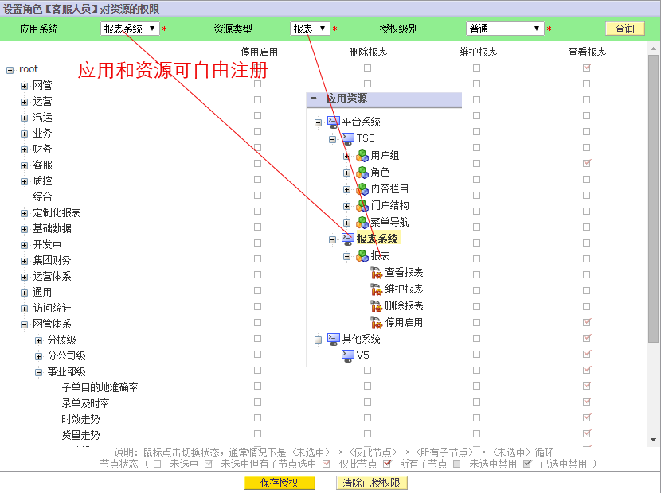
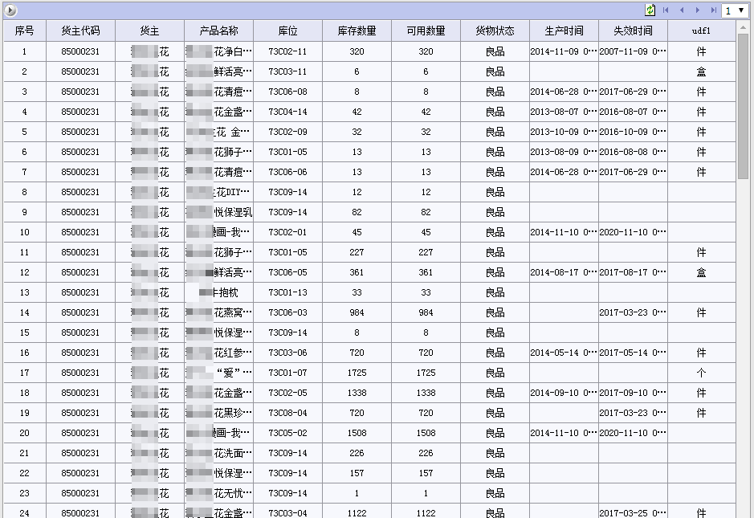
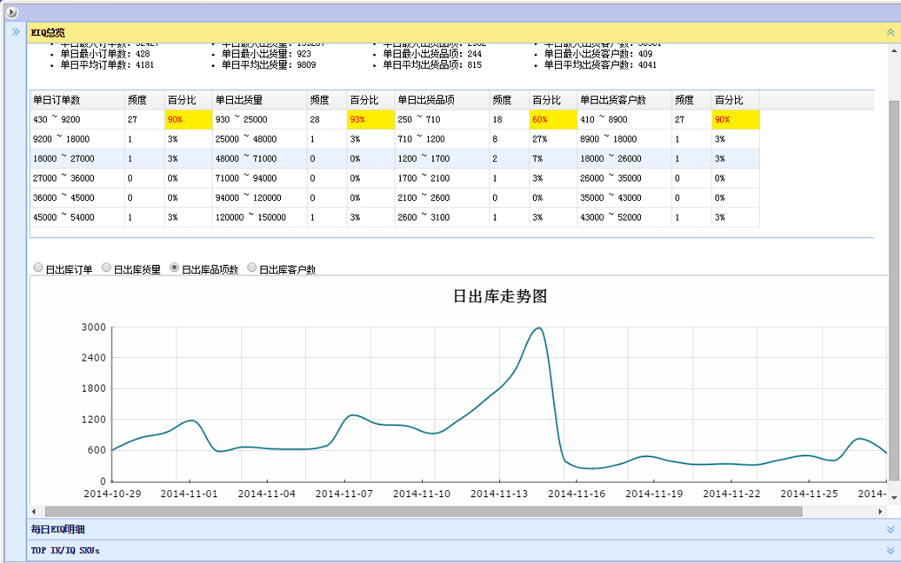
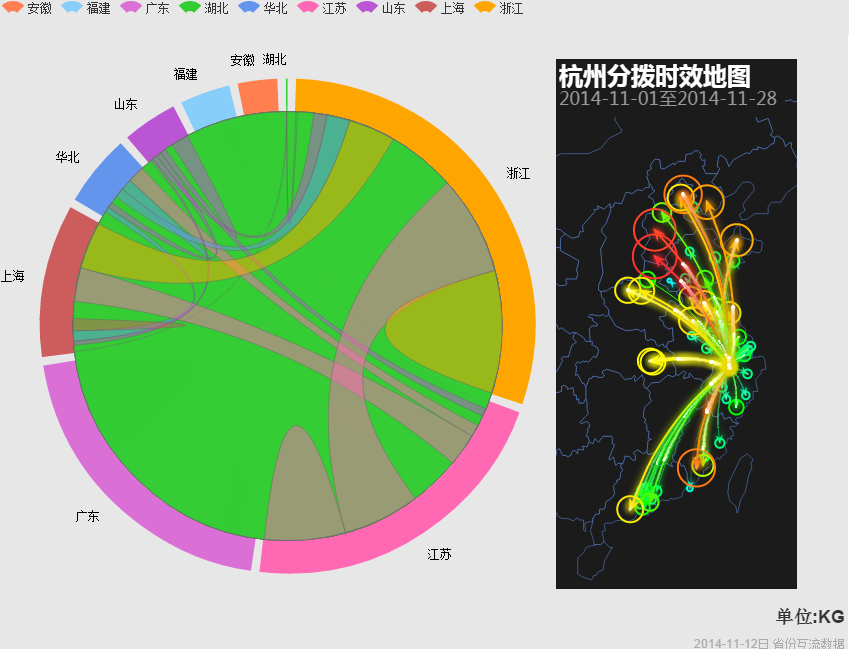

让SQL即刻变报表，让数据来敲门
DMS，让报表开发更简单、更高效！
DMS 是什么？
DMS是一个在它山石（TSS）基础平台上开发的数据管理平台，专注于高效开发数据报表，降低数据分析及分发的成本。DMS使得企业管理者能够快速、准确地获取各类重要业务数据。各类分析完备的数据能够为企业管理者在第一时间做出市场决策提供强有力支持和保障。
DMS的核心的设计思想简单至极：怎么样把一个SQL快速变成报表？这想法源自我亲身经历，曾经我担负管理生产数据库的工作，业务人员经常会找我要一些数据以供他们拿去分析后做成报表再汇报给领导或分发到一线部门。每当这样的需求来时，我就得打开PL/SQL，登录到生产库，写查询SQL，查询并导出数据，然后邮件发送给业务人员。整个过程费时费力，而且当最终的数据分析结果到达需要它的人手里时，很长的时间已经过去，在如今这风云变幻的市场面前，数据能为决策提供强有力支持，而缓慢繁琐的获取、分析过程极有可能延误最佳的决策良机，过多的人工参与也使得数据的准确性缺乏保障。基于这些，我设计了DMS，期望它能做到以下功能：
1. 在网页上输入SQL-->执行查询-->获取数据-->生成表格展示-->下载，使业务人员只要会写SQL就能自己开发所需报表 2. 能便捷为每个报表定义查询条件表单 3. SQL脚本要支持模板引擎，使得可以根据用户输入的查询条件而动态生成相应的查询SQL 4. 要支持多数据源，且每个报表可独立指定数据源 5. 报表自身可以作为单独的数据服务，供其它报表或第三方程序调用 6. 要能控制访问权限，可授权给不同级别的人员使用。权限还要进一步分解成报表权限和数据权限 7. 提供丰富的图表展示模板，让数据变的生动起来 8. 支持定时机制，可以自动定时执行查询并导出数据，然后发给指定人员 9. 用户能自己订阅感兴趣的数据 10. 允许用户把自己查询到的数据（图表）分享给其它人，并可加以评论，形成数据门户加数据社区 11. 最后还要有一些辅助功能，能统计每个报表的执行效率、访问情况等，能对数据进行缓存提升性能
DMS的基本操作

DMS的报表授权

DMS的实例展示
DMS的基本图表展示
二次开发定制报表
数据提取+图表模板展示
数据门户
丰富的展示效果

开发完成后，成功实施了两个BI项目，期间得到了极大的完善，大部分的需求都可以做到零后台编码就能完成报表开发。对部分相对复杂需要二次定制开发的数据报表，DMS也提供了灵活支持。
在开发过程中，TSS发挥了强有力的基础平台作用，提供了灵活的资源权限机制，使得报表作为一种资源方便的完成了注册及授权，TSS的参数配置、缓存管理、日志管理、定时配置等公共模块都可以直接拿来使用，比如多数据源的实现就是依赖缓存池里的线程池配置，而Portal和CMS则为数据门户和数据社区的实现提供底层支持。TSS详细请参考它山石应用基础平台。